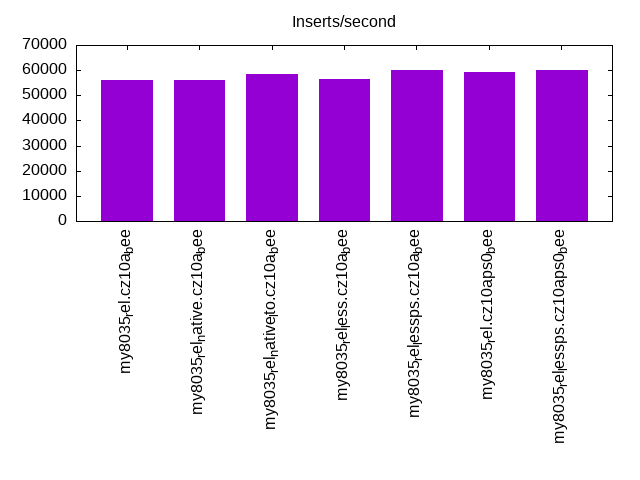
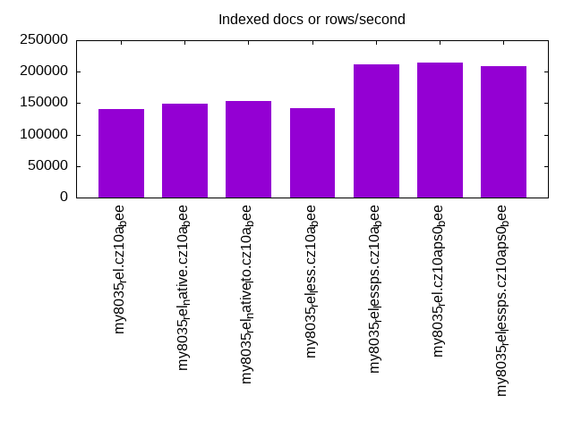
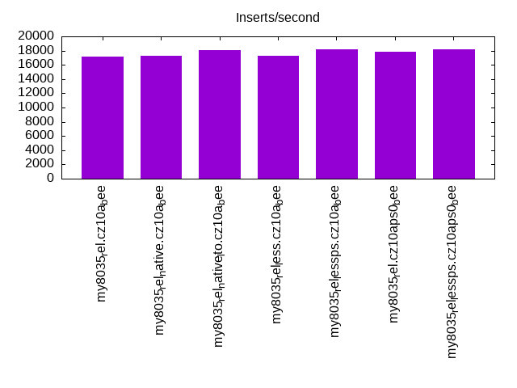
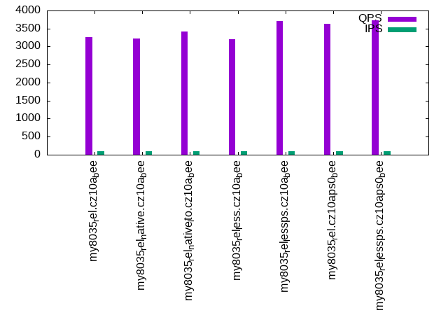
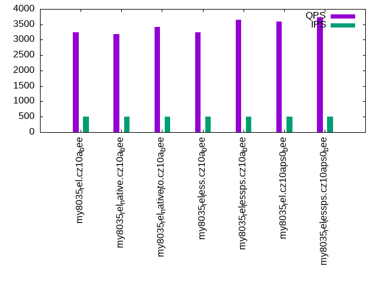
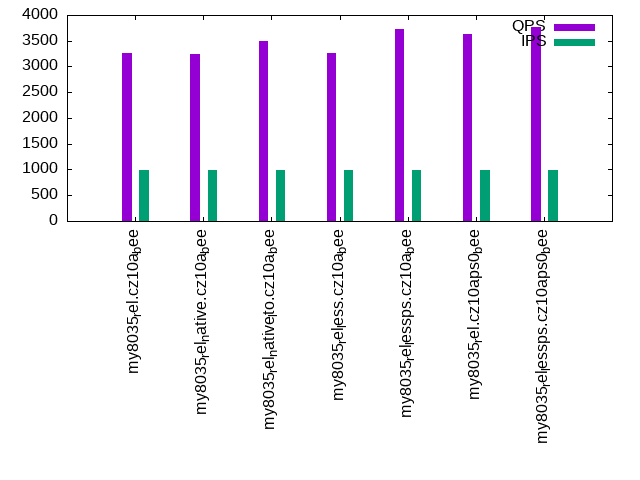

This is a report for the insert benchmark with 20M docs and 1 client(s). It is generated by scripts (bash, awk, sed) and Tufte might not be impressed. An overview of the insert benchmark is here and a short update is here. Below, by DBMS, I mean DBMS+version.config. An example is my8020.c10b40 where my means MySQL, 8020 is version 8.0.20 and c10b40 is the name for the configuration file.
The test server has 8 AMD cores, 16G RAM and an NVMe SSD. It is described here as the Beelink. The benchmark was run with 1 client and there were 1 or 3 connections per client (1 for queries or inserts without rate limits, 1+1 for rate limited inserts+deletes). It uses 1 table. It loads 20M rows per table without secondary indexes, creates secondary indexes, then inserts 50M rows per table with a delete per insert to avoid growing the table. It then does 3 read+write tests for 1800s each that do queries as fast as possible with 100, 500 and then 1000 inserts/second/client concurrent with the queries and 1000 deletes/second to avoid growing the table. The database is cached by InnoDB. Clients and the DBMS share one server. The per-database configs are in the per-database subdirectories here.
The tested DBMS are:
The numbers are inserts/s for l.i0 and l.i1, indexed docs (or rows) /s for l.x and queries/s for q*.2. The values are the average rate over the entire test for inserts (IPS) and queries (QPS). The range of values for IPS and QPS is split into 3 parts: bottom 25%, middle 50%, top 25%. Values in the bottom 25% have a red background, values in the top 25% have a green background and values in the middle have no color. A gray background is used for values that can be ignored because the DBMS did not sustain the target insert rate. Red backgrounds are not used when the minimum value is within 80% of the max value.
| dbms | l.i0 | l.x | l.i1 | q100.1 | q500.1 | q1000.1 |
|---|---|---|---|---|---|---|
| my8035_rel.cz10a_bee | 56022 | 140559 | 17206 | 3261 | 3246 | 3267 |
| my8035_rel_native.cz10a_bee | 56022 | 148889 | 17271 | 3220 | 3180 | 3239 |
| my8035_rel_native_lto.cz10a_bee | 58480 | 153435 | 18064 | 3422 | 3420 | 3504 |
| my8035_rel_less.cz10a_bee | 56338 | 142553 | 17247 | 3203 | 3234 | 3253 |
| my8035_rel_lessps.cz10a_bee | 60241 | 211579 | 18175 | 3702 | 3660 | 3724 |
| my8035_rel.cz10aps0_bee | 59347 | 213830 | 17813 | 3639 | 3592 | 3628 |
| my8035_rel_lessps.cz10aps0_bee | 60060 | 209375 | 18215 | 3733 | 3725 | 3768 |
This table has relative throughput, throughput for the DBMS relative to the DBMS in the first line, using the absolute throughput from the previous table. Values less than 0.95 have a yellow background. Values greater than 1.05 have a blue background.
| dbms | l.i0 | l.x | l.i1 | q100.1 | q500.1 | q1000.1 |
|---|---|---|---|---|---|---|
| my8035_rel.cz10a_bee | 1.00 | 1.00 | 1.00 | 1.00 | 1.00 | 1.00 |
| my8035_rel_native.cz10a_bee | 1.00 | 1.06 | 1.00 | 0.99 | 0.98 | 0.99 |
| my8035_rel_native_lto.cz10a_bee | 1.04 | 1.09 | 1.05 | 1.05 | 1.05 | 1.07 |
| my8035_rel_less.cz10a_bee | 1.01 | 1.01 | 1.00 | 0.98 | 1.00 | 1.00 |
| my8035_rel_lessps.cz10a_bee | 1.08 | 1.51 | 1.06 | 1.14 | 1.13 | 1.14 |
| my8035_rel.cz10aps0_bee | 1.06 | 1.52 | 1.04 | 1.12 | 1.11 | 1.11 |
| my8035_rel_lessps.cz10aps0_bee | 1.07 | 1.49 | 1.06 | 1.14 | 1.15 | 1.15 |
This lists the average rate of inserts/s for the tests that do inserts concurrent with queries. For such tests the query rate is listed in the table above. The read+write tests are setup so that the insert rate should match the target rate every second. Cells that are not at least 95% of the target have a red background to indicate a failure to satisfy the target.
| dbms | q100.1 | q500.1 | q1000.1 |
|---|---|---|---|
| my8035_rel.cz10a_bee | 100 | 499 | 997 |
| my8035_rel_native.cz10a_bee | 100 | 498 | 997 |
| my8035_rel_native_lto.cz10a_bee | 100 | 499 | 998 |
| my8035_rel_less.cz10a_bee | 100 | 499 | 998 |
| my8035_rel_lessps.cz10a_bee | 100 | 498 | 997 |
| my8035_rel.cz10aps0_bee | 100 | 499 | 997 |
| my8035_rel_lessps.cz10aps0_bee | 100 | 499 | 998 |
| target | 100 | 500 | 1000 |
l.i0: load without secondary indexes. Graphs for performance per 1-second interval are here.
Average throughput:
Insert response time histogram: each cell has the percentage of responses that take <= the time in the header and max is the max response time in seconds. For the max column values in the top 25% of the range have a red background and in the bottom 25% of the range have a green background. The red background is not used when the min value is within 80% of the max value.
| dbms | 256us | 1ms | 4ms | 16ms | 64ms | 256ms | 1s | 4s | 16s | gt | max |
|---|---|---|---|---|---|---|---|---|---|---|---|
| my8035_rel.cz10a_bee | 99.406 | 0.454 | 0.137 | 0.003 | 0.071 | ||||||
| my8035_rel_native.cz10a_bee | 99.408 | 0.452 | 0.137 | 0.003 | 0.072 | ||||||
| my8035_rel_native_lto.cz10a_bee | 99.422 | 0.446 | 0.128 | 0.003 | 0.071 | ||||||
| my8035_rel_less.cz10a_bee | 99.409 | 0.444 | 0.144 | 0.003 | 0.070 | ||||||
| my8035_rel_lessps.cz10a_bee | 99.438 | 0.411 | 0.148 | 0.003 | 0.087 | ||||||
| my8035_rel.cz10aps0_bee | 99.436 | 0.417 | 0.146 | 0.002 | 0.069 | ||||||
| my8035_rel_lessps.cz10aps0_bee | 99.443 | 0.404 | 0.151 | 0.003 | 0.071 |
Performance metrics for the DBMS listed above. Some are normalized by throughput, others are not. Legend for results is here.
ips qps rps rmbps wps wmbps rpq rkbpq wpi wkbpi csps cpups cspq cpupq dbgb1 dbgb2 rss maxop p50 p99 tag 56022 0 0 0.0 189.4 17.3 0.000 0.000 0.003 0.316 6219 20.0 0.111 29 1.3 17.9 2.5 0.071 56414 51444 20m.my8035_rel.cz10a_bee 56022 0 0 0.0 189.4 17.3 0.000 0.000 0.003 0.316 6226 19.9 0.111 28 1.3 17.9 2.5 0.072 56238 50750 20m.my8035_rel_native.cz10a_bee 58480 0 0 0.0 198.6 18.1 0.000 0.000 0.003 0.317 6518 20.4 0.111 28 1.3 17.9 2.4 0.071 58833 53045 20m.my8035_rel_native_lto.cz10a_bee 56338 0 0 0.0 190.7 17.4 0.000 0.000 0.003 0.316 6259 19.9 0.111 28 1.3 17.9 2.4 0.070 56661 51743 20m.my8035_rel_less.cz10a_bee 60241 0 0 0.0 205.0 18.6 0.000 0.000 0.003 0.316 6658 19.9 0.111 26 1.3 17.9 2.1 0.087 60732 54439 20m.my8035_rel_lessps.cz10a_bee 59347 0 0 0.0 201.6 18.3 0.000 0.000 0.003 0.317 6545 20.2 0.110 27 1.3 17.9 2.2 0.069 59846 53876 20m.my8035_rel.cz10aps0_bee 60060 0 0 0.0 201.8 18.5 0.000 0.000 0.003 0.315 6569 20.0 0.109 27 1.3 17.9 2.1 0.071 60234 54442 20m.my8035_rel_lessps.cz10aps0_bee
l.x: create secondary indexes.
Average throughput:
Performance metrics for the DBMS listed above. Some are normalized by throughput, others are not. Legend for results is here.
ips qps rps rmbps wps wmbps rpq rkbpq wpi wkbpi csps cpups cspq cpupq dbgb1 dbgb2 rss maxop p50 p99 tag 140559 0 706 45.9 2214.0 138.8 0.005 0.335 0.016 1.011 9323 42.4 0.066 24 3.0 19.5 3.1 0.020 NA NA 20m.my8035_rel.cz10a_bee 148889 0 732 47.6 2960.7 154.9 0.005 0.328 0.020 1.065 10746 42.0 0.072 23 3.0 19.5 3.4 0.011 NA NA 20m.my8035_rel_native.cz10a_bee 153435 0 760 49.5 2878.5 157.9 0.005 0.330 0.019 1.054 10729 42.2 0.070 22 3.0 19.5 3.6 0.019 NA NA 20m.my8035_rel_native_lto.cz10a_bee 142553 0 706 46.0 2866.2 149.6 0.005 0.330 0.020 1.075 10495 42.3 0.074 24 3.0 19.5 3.1 0.012 NA NA 20m.my8035_rel_less.cz10a_bee 211579 0 1043 67.7 4323.3 221.6 0.005 0.328 0.020 1.072 15207 40.2 0.072 15 3.0 19.5 3.5 0.019 NA NA 20m.my8035_rel_lessps.cz10a_bee 213830 0 1098 71.5 3093.7 210.9 0.005 0.342 0.014 1.010 13118 41.3 0.061 15 3.0 19.5 3.7 0.019 NA NA 20m.my8035_rel.cz10aps0_bee 209375 0 1040 67.7 4040.2 217.2 0.005 0.331 0.019 1.062 14688 40.3 0.070 15 3.0 19.5 3.5 0.011 NA NA 20m.my8035_rel_lessps.cz10aps0_bee
l.i1: continue load after secondary indexes created. Graphs for performance per 1-second interval are here.
Average throughput:
Insert response time histogram: each cell has the percentage of responses that take <= the time in the header and max is the max response time in seconds. For the max column values in the top 25% of the range have a red background and in the bottom 25% of the range have a green background. The red background is not used when the min value is within 80% of the max value.
| dbms | 256us | 1ms | 4ms | 16ms | 64ms | 256ms | 1s | 4s | 16s | gt | max |
|---|---|---|---|---|---|---|---|---|---|---|---|
| my8035_rel.cz10a_bee | 96.659 | 3.206 | 0.135 | 0.001 | 0.104 | ||||||
| my8035_rel_native.cz10a_bee | 96.766 | 3.101 | 0.131 | 0.001 | 0.107 | ||||||
| my8035_rel_native_lto.cz10a_bee | 96.808 | 3.057 | 0.135 | 0.001 | 0.104 | ||||||
| my8035_rel_less.cz10a_bee | 96.750 | 3.112 | 0.136 | 0.001 | 0.104 | ||||||
| my8035_rel_lessps.cz10a_bee | 96.864 | 2.997 | 0.138 | 0.001 | 0.106 | ||||||
| my8035_rel.cz10aps0_bee | 96.801 | 3.067 | 0.132 | 0.001 | 0.105 | ||||||
| my8035_rel_lessps.cz10aps0_bee | 96.914 | 2.945 | 0.140 | 0.001 | 0.077 |
Delete response time histogram: each cell has the percentage of responses that take <= the time in the header and max is the max response time in seconds. For the max column values in the top 25% of the range have a red background and in the bottom 25% of the range have a green background. The red background is not used when the min value is within 80% of the max value.
| dbms | 256us | 1ms | 4ms | 16ms | 64ms | 256ms | 1s | 4s | 16s | gt | max |
|---|---|---|---|---|---|---|---|---|---|---|---|
| my8035_rel.cz10a_bee | 97.896 | 2.054 | 0.049 | 0.001 | 0.103 | ||||||
| my8035_rel_native.cz10a_bee | 97.958 | 1.996 | 0.045 | 0.001 | 0.103 | ||||||
| my8035_rel_native_lto.cz10a_bee | 97.919 | 2.036 | 0.044 | nonzero | 0.103 | ||||||
| my8035_rel_less.cz10a_bee | 97.938 | 2.017 | 0.044 | 0.001 | 0.105 | ||||||
| my8035_rel_lessps.cz10a_bee | 97.919 | 2.036 | 0.044 | 0.001 | 0.105 | ||||||
| my8035_rel.cz10aps0_bee | 97.914 | 2.043 | 0.042 | 0.001 | 0.103 | ||||||
| my8035_rel_lessps.cz10aps0_bee | 97.934 | 2.020 | 0.046 | nonzero | 0.071 |
Performance metrics for the DBMS listed above. Some are normalized by throughput, others are not. Legend for results is here.
ips qps rps rmbps wps wmbps rpq rkbpq wpi wkbpi csps cpups cspq cpupq dbgb1 dbgb2 rss maxop p50 p99 tag 17206 0 32 0.5 2371.3 87.9 0.002 0.030 0.138 5.229 14581 36.3 0.847 169 4.3 21.0 5.6 0.104 17839 4894 20m.my8035_rel.cz10a_bee 17271 0 32 0.5 2270.4 85.5 0.002 0.030 0.131 5.070 14277 36.3 0.827 168 4.3 21.0 5.6 0.107 17930 5044 20m.my8035_rel_native.cz10a_bee 18064 0 33 0.5 2386.2 89.6 0.002 0.030 0.132 5.079 15054 36.6 0.833 162 4.3 21.1 5.6 0.104 18817 4746 20m.my8035_rel_native_lto.cz10a_bee 17247 0 32 0.5 2322.0 86.5 0.002 0.030 0.135 5.138 14435 36.4 0.837 169 4.3 21.1 5.6 0.104 17880 4945 20m.my8035_rel_less.cz10a_bee 18175 0 34 0.5 2446.0 91.0 0.002 0.030 0.135 5.130 15170 36.6 0.835 161 4.3 21.1 5.3 0.106 18929 4743 20m.my8035_rel_lessps.cz10a_bee 17813 0 33 0.5 2392.0 89.2 0.002 0.030 0.134 5.126 14863 36.6 0.834 164 4.3 21.1 5.4 0.105 18488 4644 20m.my8035_rel.cz10aps0_bee 18215 0 34 0.5 2422.1 90.4 0.002 0.030 0.133 5.083 15190 36.6 0.834 161 4.3 21.1 5.3 0.077 18929 4795 20m.my8035_rel_lessps.cz10aps0_bee
q100.1: range queries with 100 insert/s per client. Graphs for performance per 1-second interval are here.
Average throughput:
Query response time histogram: each cell has the percentage of responses that take <= the time in the header and max is the max response time in seconds. For max values in the top 25% of the range have a red background and in the bottom 25% of the range have a green background. The red background is not used when the min value is within 80% of the max value.
| dbms | 256us | 1ms | 4ms | 16ms | 64ms | 256ms | 1s | 4s | 16s | gt | max |
|---|---|---|---|---|---|---|---|---|---|---|---|
| my8035_rel.cz10a_bee | 32.401 | 67.599 | nonzero | 0.003 | |||||||
| my8035_rel_native.cz10a_bee | 31.232 | 68.767 | 0.001 | nonzero | 0.005 | ||||||
| my8035_rel_native_lto.cz10a_bee | 43.662 | 56.337 | 0.001 | nonzero | 0.004 | ||||||
| my8035_rel_less.cz10a_bee | 30.007 | 69.993 | 0.001 | 0.003 | |||||||
| my8035_rel_lessps.cz10a_bee | 59.414 | 40.585 | nonzero | nonzero | 0.004 | ||||||
| my8035_rel.cz10aps0_bee | 57.117 | 42.882 | 0.001 | nonzero | 0.005 | ||||||
| my8035_rel_lessps.cz10aps0_bee | 60.846 | 39.153 | nonzero | 0.003 |
Insert response time histogram: each cell has the percentage of responses that take <= the time in the header and max is the max response time in seconds. For max values in the top 25% of the range have a red background and in the bottom 25% of the range have a green background. The red background is not used when the min value is within 80% of the max value.
| dbms | 256us | 1ms | 4ms | 16ms | 64ms | 256ms | 1s | 4s | 16s | gt | max |
|---|---|---|---|---|---|---|---|---|---|---|---|
| my8035_rel.cz10a_bee | 99.639 | 0.333 | 0.028 | 0.016 | |||||||
| my8035_rel_native.cz10a_bee | 99.556 | 0.444 | 0.015 | ||||||||
| my8035_rel_native_lto.cz10a_bee | 99.806 | 0.194 | 0.015 | ||||||||
| my8035_rel_less.cz10a_bee | 99.333 | 0.639 | 0.028 | 0.024 | |||||||
| my8035_rel_lessps.cz10a_bee | 99.833 | 0.167 | 0.015 | ||||||||
| my8035_rel.cz10aps0_bee | 99.750 | 0.250 | 0.010 | ||||||||
| my8035_rel_lessps.cz10aps0_bee | 99.778 | 0.222 | 0.014 |
Delete response time histogram: each cell has the percentage of responses that take <= the time in the header and max is the max response time in seconds. For max values in the top 25% of the range have a red background and in the bottom 25% of the range have a green background. The red background is not used when the min value is within 80% of the max value.
| dbms | 256us | 1ms | 4ms | 16ms | 64ms | 256ms | 1s | 4s | 16s | gt | max |
|---|---|---|---|---|---|---|---|---|---|---|---|
| my8035_rel.cz10a_bee | 99.833 | 0.167 | 0.013 | ||||||||
| my8035_rel_native.cz10a_bee | 99.667 | 0.333 | 0.008 | ||||||||
| my8035_rel_native_lto.cz10a_bee | 99.833 | 0.139 | 0.028 | 0.020 | |||||||
| my8035_rel_less.cz10a_bee | 99.667 | 0.306 | 0.028 | 0.024 | |||||||
| my8035_rel_lessps.cz10a_bee | 99.861 | 0.139 | 0.014 | ||||||||
| my8035_rel.cz10aps0_bee | 99.889 | 0.111 | 0.008 | ||||||||
| my8035_rel_lessps.cz10aps0_bee | 99.889 | 0.111 | 0.014 |
Performance metrics for the DBMS listed above. Some are normalized by throughput, others are not. Legend for results is here.
ips qps rps rmbps wps wmbps rpq rkbpq wpi wkbpi csps cpups cspq cpupq dbgb1 dbgb2 rss maxop p50 p99 tag 100 3261 0 0.0 89.2 2.2 0.000 0.000 0.894 22.300 13096 12.6 4.015 309 4.3 21.0 5.6 0.003 3244 3018 20m.my8035_rel.cz10a_bee 100 3220 0 0.0 90.4 2.2 0.000 0.000 0.906 22.524 12966 12.6 4.027 313 4.3 21.0 5.6 0.005 3212 2989 20m.my8035_rel_native.cz10a_bee 100 3422 0 0.0 90.5 2.2 0.000 0.000 0.907 22.620 13737 12.9 4.015 302 4.3 21.1 5.6 0.004 3405 3164 20m.my8035_rel_native_lto.cz10a_bee 100 3203 0 0.0 91.9 2.2 0.000 0.000 0.922 22.951 12905 12.6 4.030 315 4.3 21.1 5.6 0.003 3197 2991 20m.my8035_rel_less.cz10a_bee 100 3702 0 0.0 93.1 2.3 0.000 0.000 0.935 23.341 14834 13.1 4.007 283 4.3 21.1 5.3 0.004 3692 3403 20m.my8035_rel_lessps.cz10a_bee 100 3639 0 0.0 92.9 2.3 0.000 0.000 0.931 23.200 14567 13.0 4.003 286 4.3 21.1 5.4 0.005 3625 3356 20m.my8035_rel.cz10aps0_bee 100 3733 0 0.0 91.7 2.2 0.000 0.000 0.919 22.847 14915 13.0 3.996 279 4.3 21.1 5.3 0.003 3722 3435 20m.my8035_rel_lessps.cz10aps0_bee
q500.1: range queries with 500 insert/s per client. Graphs for performance per 1-second interval are here.
Average throughput:
Query response time histogram: each cell has the percentage of responses that take <= the time in the header and max is the max response time in seconds. For max values in the top 25% of the range have a red background and in the bottom 25% of the range have a green background. The red background is not used when the min value is within 80% of the max value.
| dbms | 256us | 1ms | 4ms | 16ms | 64ms | 256ms | 1s | 4s | 16s | gt | max |
|---|---|---|---|---|---|---|---|---|---|---|---|
| my8035_rel.cz10a_bee | 31.557 | 68.442 | 0.001 | nonzero | 0.005 | ||||||
| my8035_rel_native.cz10a_bee | 28.881 | 71.118 | nonzero | 0.003 | |||||||
| my8035_rel_native_lto.cz10a_bee | 43.733 | 56.267 | nonzero | 0.004 | |||||||
| my8035_rel_less.cz10a_bee | 30.533 | 69.466 | nonzero | nonzero | 0.004 | ||||||
| my8035_rel_lessps.cz10a_bee | 57.492 | 42.508 | nonzero | 0.003 | |||||||
| my8035_rel.cz10aps0_bee | 55.058 | 44.942 | nonzero | 0.003 | |||||||
| my8035_rel_lessps.cz10aps0_bee | 60.556 | 39.444 | nonzero | 0.003 |
Insert response time histogram: each cell has the percentage of responses that take <= the time in the header and max is the max response time in seconds. For max values in the top 25% of the range have a red background and in the bottom 25% of the range have a green background. The red background is not used when the min value is within 80% of the max value.
| dbms | 256us | 1ms | 4ms | 16ms | 64ms | 256ms | 1s | 4s | 16s | gt | max |
|---|---|---|---|---|---|---|---|---|---|---|---|
| my8035_rel.cz10a_bee | 99.389 | 0.600 | 0.011 | 0.025 | |||||||
| my8035_rel_native.cz10a_bee | 99.300 | 0.683 | 0.017 | 0.036 | |||||||
| my8035_rel_native_lto.cz10a_bee | 99.622 | 0.372 | 0.006 | 0.026 | |||||||
| my8035_rel_less.cz10a_bee | 99.378 | 0.611 | 0.011 | 0.025 | |||||||
| my8035_rel_lessps.cz10a_bee | 99.817 | 0.178 | 0.006 | 0.025 | |||||||
| my8035_rel.cz10aps0_bee | 99.583 | 0.417 | 0.015 | ||||||||
| my8035_rel_lessps.cz10aps0_bee | 99.367 | 0.622 | 0.011 | 0.025 |
Delete response time histogram: each cell has the percentage of responses that take <= the time in the header and max is the max response time in seconds. For max values in the top 25% of the range have a red background and in the bottom 25% of the range have a green background. The red background is not used when the min value is within 80% of the max value.
| dbms | 256us | 1ms | 4ms | 16ms | 64ms | 256ms | 1s | 4s | 16s | gt | max |
|---|---|---|---|---|---|---|---|---|---|---|---|
| my8035_rel.cz10a_bee | 99.733 | 0.256 | 0.011 | 0.024 | |||||||
| my8035_rel_native.cz10a_bee | 99.656 | 0.333 | 0.011 | 0.033 | |||||||
| my8035_rel_native_lto.cz10a_bee | 99.806 | 0.194 | 0.016 | ||||||||
| my8035_rel_less.cz10a_bee | 99.628 | 0.367 | 0.006 | 0.025 | |||||||
| my8035_rel_lessps.cz10a_bee | 99.889 | 0.106 | 0.006 | 0.023 | |||||||
| my8035_rel.cz10aps0_bee | 99.800 | 0.200 | 0.015 | ||||||||
| my8035_rel_lessps.cz10aps0_bee | 99.572 | 0.422 | 0.006 | 0.024 |
Performance metrics for the DBMS listed above. Some are normalized by throughput, others are not. Legend for results is here.
ips qps rps rmbps wps wmbps rpq rkbpq wpi wkbpi csps cpups cspq cpupq dbgb1 dbgb2 rss maxop p50 p99 tag 499 3246 0 0.0 45.6 1.6 0.000 0.000 0.091 3.337 13021 13.5 4.012 333 4.3 21.0 5.6 0.005 3229 3020 20m.my8035_rel.cz10a_bee 498 3180 0 0.0 35.5 1.4 0.000 0.000 0.071 2.796 12744 13.4 4.007 337 4.3 21.0 5.6 0.003 3180 2989 20m.my8035_rel_native.cz10a_bee 499 3420 0 0.0 35.3 1.4 0.000 0.000 0.071 2.780 13649 13.9 3.990 325 4.3 21.1 5.6 0.004 3407 3180 20m.my8035_rel_native_lto.cz10a_bee 499 3234 0 0.0 36.7 1.4 0.000 0.000 0.074 2.863 12951 13.5 4.004 334 4.3 21.1 5.6 0.004 3228 3021 20m.my8035_rel_less.cz10a_bee 498 3660 0 0.0 37.7 1.4 0.000 0.000 0.076 2.916 14598 13.8 3.989 302 4.3 21.1 5.3 0.003 3645 3372 20m.my8035_rel_lessps.cz10a_bee 499 3592 0 0.0 32.7 1.3 0.000 0.000 0.066 2.646 14307 13.9 3.983 310 4.3 21.1 5.4 0.003 3580 3307 20m.my8035_rel.cz10aps0_bee 499 3725 0 0.0 32.7 1.3 0.000 0.000 0.066 2.623 14798 13.7 3.972 294 4.3 21.1 5.3 0.003 3707 3407 20m.my8035_rel_lessps.cz10aps0_bee
q1000.1: range queries with 1000 insert/s per client. Graphs for performance per 1-second interval are here.
Average throughput:
Query response time histogram: each cell has the percentage of responses that take <= the time in the header and max is the max response time in seconds. For max values in the top 25% of the range have a red background and in the bottom 25% of the range have a green background. The red background is not used when the min value is within 80% of the max value.
| dbms | 256us | 1ms | 4ms | 16ms | 64ms | 256ms | 1s | 4s | 16s | gt | max |
|---|---|---|---|---|---|---|---|---|---|---|---|
| my8035_rel.cz10a_bee | 33.728 | 66.270 | 0.002 | nonzero | 0.004 | ||||||
| my8035_rel_native.cz10a_bee | 31.938 | 68.060 | 0.002 | nonzero | 0.006 | ||||||
| my8035_rel_native_lto.cz10a_bee | 48.224 | 51.774 | 0.002 | nonzero | 0.004 | ||||||
| my8035_rel_less.cz10a_bee | 32.692 | 67.306 | 0.002 | nonzero | 0.006 | ||||||
| my8035_rel_lessps.cz10a_bee | 60.240 | 39.758 | 0.002 | nonzero | 0.006 | ||||||
| my8035_rel.cz10aps0_bee | 56.356 | 43.642 | 0.002 | nonzero | 0.004 | ||||||
| my8035_rel_lessps.cz10aps0_bee | 61.798 | 38.200 | 0.001 | 0.004 |
Insert response time histogram: each cell has the percentage of responses that take <= the time in the header and max is the max response time in seconds. For max values in the top 25% of the range have a red background and in the bottom 25% of the range have a green background. The red background is not used when the min value is within 80% of the max value.
| dbms | 256us | 1ms | 4ms | 16ms | 64ms | 256ms | 1s | 4s | 16s | gt | max |
|---|---|---|---|---|---|---|---|---|---|---|---|
| my8035_rel.cz10a_bee | 97.719 | 2.261 | 0.019 | 0.051 | |||||||
| my8035_rel_native.cz10a_bee | 98.011 | 1.978 | 0.011 | 0.043 | |||||||
| my8035_rel_native_lto.cz10a_bee | 98.411 | 1.564 | 0.025 | 0.050 | |||||||
| my8035_rel_less.cz10a_bee | 97.600 | 2.386 | 0.014 | 0.040 | |||||||
| my8035_rel_lessps.cz10a_bee | 98.597 | 1.392 | 0.011 | 0.055 | |||||||
| my8035_rel.cz10aps0_bee | 98.322 | 1.658 | 0.019 | 0.041 | |||||||
| my8035_rel_lessps.cz10aps0_bee | 98.739 | 1.247 | 0.014 | 0.040 |
Delete response time histogram: each cell has the percentage of responses that take <= the time in the header and max is the max response time in seconds. For max values in the top 25% of the range have a red background and in the bottom 25% of the range have a green background. The red background is not used when the min value is within 80% of the max value.
| dbms | 256us | 1ms | 4ms | 16ms | 64ms | 256ms | 1s | 4s | 16s | gt | max |
|---|---|---|---|---|---|---|---|---|---|---|---|
| my8035_rel.cz10a_bee | 99.547 | 0.450 | 0.003 | 0.024 | |||||||
| my8035_rel_native.cz10a_bee | 99.508 | 0.483 | 0.008 | 0.035 | |||||||
| my8035_rel_native_lto.cz10a_bee | 99.319 | 0.664 | 0.017 | 0.040 | |||||||
| my8035_rel_less.cz10a_bee | 99.694 | 0.294 | 0.011 | 0.049 | |||||||
| my8035_rel_lessps.cz10a_bee | 99.475 | 0.519 | 0.006 | 0.023 | |||||||
| my8035_rel.cz10aps0_bee | 99.656 | 0.339 | 0.006 | 0.049 | |||||||
| my8035_rel_lessps.cz10aps0_bee | 99.614 | 0.378 | 0.008 | 0.049 |
Performance metrics for the DBMS listed above. Some are normalized by throughput, others are not. Legend for results is here.
ips qps rps rmbps wps wmbps rpq rkbpq wpi wkbpi csps cpups cspq cpupq dbgb1 dbgb2 rss maxop p50 p99 tag 997 3267 0 0.0 188.4 5.9 0.000 0.000 0.189 6.019 13701 14.8 4.193 362 4.3 21.0 5.6 0.004 3260 3021 20m.my8035_rel.cz10a_bee 997 3239 0 0.0 203.8 6.3 0.000 0.000 0.205 6.425 13650 14.8 4.214 366 4.3 21.0 5.6 0.006 3229 3005 20m.my8035_rel_native.cz10a_bee 998 3504 0 0.0 206.8 6.3 0.000 0.000 0.207 6.501 14674 15.0 4.188 342 4.3 21.1 5.6 0.004 3484 3196 20m.my8035_rel_native_lto.cz10a_bee 998 3253 0 0.0 202.2 6.2 0.000 0.000 0.203 6.375 13694 14.9 4.210 366 4.3 21.1 5.6 0.006 3246 3021 20m.my8035_rel_less.cz10a_bee 997 3724 0 0.0 198.1 6.1 0.000 0.000 0.199 6.272 15479 15.0 4.156 322 4.3 21.1 5.3 0.006 3692 3390 20m.my8035_rel_lessps.cz10a_bee 997 3628 0 0.0 205.6 6.3 0.000 0.000 0.206 6.472 15121 15.1 4.168 333 4.3 21.1 5.4 0.004 3611 3307 20m.my8035_rel.cz10aps0_bee 998 3768 0 0.0 207.7 6.4 0.000 0.000 0.208 6.522 15660 15.0 4.156 318 4.3 21.1 5.3 0.004 3727 3419 20m.my8035_rel_lessps.cz10aps0_bee
l.i0: load without secondary indexes
Performance metrics for all DBMS, not just the ones listed above. Some are normalized by throughput, others are not. Legend for results is here.
ips qps rps rmbps wps wmbps rpq rkbpq wpi wkbpi csps cpups cspq cpupq dbgb1 dbgb2 rss maxop p50 p99 tag 56022 0 0 0.0 189.4 17.3 0.000 0.000 0.003 0.316 6219 20.0 0.111 29 1.3 17.9 2.5 0.071 56414 51444 20m.my8035_rel.cz10a_bee 56022 0 0 0.0 189.4 17.3 0.000 0.000 0.003 0.316 6226 19.9 0.111 28 1.3 17.9 2.5 0.072 56238 50750 20m.my8035_rel_native.cz10a_bee 58480 0 0 0.0 198.6 18.1 0.000 0.000 0.003 0.317 6518 20.4 0.111 28 1.3 17.9 2.4 0.071 58833 53045 20m.my8035_rel_native_lto.cz10a_bee 56338 0 0 0.0 190.7 17.4 0.000 0.000 0.003 0.316 6259 19.9 0.111 28 1.3 17.9 2.4 0.070 56661 51743 20m.my8035_rel_less.cz10a_bee 60241 0 0 0.0 205.0 18.6 0.000 0.000 0.003 0.316 6658 19.9 0.111 26 1.3 17.9 2.1 0.087 60732 54439 20m.my8035_rel_lessps.cz10a_bee 59347 0 0 0.0 201.6 18.3 0.000 0.000 0.003 0.317 6545 20.2 0.110 27 1.3 17.9 2.2 0.069 59846 53876 20m.my8035_rel.cz10aps0_bee 60060 0 0 0.0 201.8 18.5 0.000 0.000 0.003 0.315 6569 20.0 0.109 27 1.3 17.9 2.1 0.071 60234 54442 20m.my8035_rel_lessps.cz10aps0_bee
l.x: create secondary indexes
Performance metrics for all DBMS, not just the ones listed above. Some are normalized by throughput, others are not. Legend for results is here.
ips qps rps rmbps wps wmbps rpq rkbpq wpi wkbpi csps cpups cspq cpupq dbgb1 dbgb2 rss maxop p50 p99 tag 140559 0 706 45.9 2214.0 138.8 0.005 0.335 0.016 1.011 9323 42.4 0.066 24 3.0 19.5 3.1 0.020 NA NA 20m.my8035_rel.cz10a_bee 148889 0 732 47.6 2960.7 154.9 0.005 0.328 0.020 1.065 10746 42.0 0.072 23 3.0 19.5 3.4 0.011 NA NA 20m.my8035_rel_native.cz10a_bee 153435 0 760 49.5 2878.5 157.9 0.005 0.330 0.019 1.054 10729 42.2 0.070 22 3.0 19.5 3.6 0.019 NA NA 20m.my8035_rel_native_lto.cz10a_bee 142553 0 706 46.0 2866.2 149.6 0.005 0.330 0.020 1.075 10495 42.3 0.074 24 3.0 19.5 3.1 0.012 NA NA 20m.my8035_rel_less.cz10a_bee 211579 0 1043 67.7 4323.3 221.6 0.005 0.328 0.020 1.072 15207 40.2 0.072 15 3.0 19.5 3.5 0.019 NA NA 20m.my8035_rel_lessps.cz10a_bee 213830 0 1098 71.5 3093.7 210.9 0.005 0.342 0.014 1.010 13118 41.3 0.061 15 3.0 19.5 3.7 0.019 NA NA 20m.my8035_rel.cz10aps0_bee 209375 0 1040 67.7 4040.2 217.2 0.005 0.331 0.019 1.062 14688 40.3 0.070 15 3.0 19.5 3.5 0.011 NA NA 20m.my8035_rel_lessps.cz10aps0_bee
l.i1: continue load after secondary indexes created
Performance metrics for all DBMS, not just the ones listed above. Some are normalized by throughput, others are not. Legend for results is here.
ips qps rps rmbps wps wmbps rpq rkbpq wpi wkbpi csps cpups cspq cpupq dbgb1 dbgb2 rss maxop p50 p99 tag 17206 0 32 0.5 2371.3 87.9 0.002 0.030 0.138 5.229 14581 36.3 0.847 169 4.3 21.0 5.6 0.104 17839 4894 20m.my8035_rel.cz10a_bee 17271 0 32 0.5 2270.4 85.5 0.002 0.030 0.131 5.070 14277 36.3 0.827 168 4.3 21.0 5.6 0.107 17930 5044 20m.my8035_rel_native.cz10a_bee 18064 0 33 0.5 2386.2 89.6 0.002 0.030 0.132 5.079 15054 36.6 0.833 162 4.3 21.1 5.6 0.104 18817 4746 20m.my8035_rel_native_lto.cz10a_bee 17247 0 32 0.5 2322.0 86.5 0.002 0.030 0.135 5.138 14435 36.4 0.837 169 4.3 21.1 5.6 0.104 17880 4945 20m.my8035_rel_less.cz10a_bee 18175 0 34 0.5 2446.0 91.0 0.002 0.030 0.135 5.130 15170 36.6 0.835 161 4.3 21.1 5.3 0.106 18929 4743 20m.my8035_rel_lessps.cz10a_bee 17813 0 33 0.5 2392.0 89.2 0.002 0.030 0.134 5.126 14863 36.6 0.834 164 4.3 21.1 5.4 0.105 18488 4644 20m.my8035_rel.cz10aps0_bee 18215 0 34 0.5 2422.1 90.4 0.002 0.030 0.133 5.083 15190 36.6 0.834 161 4.3 21.1 5.3 0.077 18929 4795 20m.my8035_rel_lessps.cz10aps0_bee
q100.1: range queries with 100 insert/s per client
Performance metrics for all DBMS, not just the ones listed above. Some are normalized by throughput, others are not. Legend for results is here.
ips qps rps rmbps wps wmbps rpq rkbpq wpi wkbpi csps cpups cspq cpupq dbgb1 dbgb2 rss maxop p50 p99 tag 100 3261 0 0.0 89.2 2.2 0.000 0.000 0.894 22.300 13096 12.6 4.015 309 4.3 21.0 5.6 0.003 3244 3018 20m.my8035_rel.cz10a_bee 100 3220 0 0.0 90.4 2.2 0.000 0.000 0.906 22.524 12966 12.6 4.027 313 4.3 21.0 5.6 0.005 3212 2989 20m.my8035_rel_native.cz10a_bee 100 3422 0 0.0 90.5 2.2 0.000 0.000 0.907 22.620 13737 12.9 4.015 302 4.3 21.1 5.6 0.004 3405 3164 20m.my8035_rel_native_lto.cz10a_bee 100 3203 0 0.0 91.9 2.2 0.000 0.000 0.922 22.951 12905 12.6 4.030 315 4.3 21.1 5.6 0.003 3197 2991 20m.my8035_rel_less.cz10a_bee 100 3702 0 0.0 93.1 2.3 0.000 0.000 0.935 23.341 14834 13.1 4.007 283 4.3 21.1 5.3 0.004 3692 3403 20m.my8035_rel_lessps.cz10a_bee 100 3639 0 0.0 92.9 2.3 0.000 0.000 0.931 23.200 14567 13.0 4.003 286 4.3 21.1 5.4 0.005 3625 3356 20m.my8035_rel.cz10aps0_bee 100 3733 0 0.0 91.7 2.2 0.000 0.000 0.919 22.847 14915 13.0 3.996 279 4.3 21.1 5.3 0.003 3722 3435 20m.my8035_rel_lessps.cz10aps0_bee
q500.1: range queries with 500 insert/s per client
Performance metrics for all DBMS, not just the ones listed above. Some are normalized by throughput, others are not. Legend for results is here.
ips qps rps rmbps wps wmbps rpq rkbpq wpi wkbpi csps cpups cspq cpupq dbgb1 dbgb2 rss maxop p50 p99 tag 499 3246 0 0.0 45.6 1.6 0.000 0.000 0.091 3.337 13021 13.5 4.012 333 4.3 21.0 5.6 0.005 3229 3020 20m.my8035_rel.cz10a_bee 498 3180 0 0.0 35.5 1.4 0.000 0.000 0.071 2.796 12744 13.4 4.007 337 4.3 21.0 5.6 0.003 3180 2989 20m.my8035_rel_native.cz10a_bee 499 3420 0 0.0 35.3 1.4 0.000 0.000 0.071 2.780 13649 13.9 3.990 325 4.3 21.1 5.6 0.004 3407 3180 20m.my8035_rel_native_lto.cz10a_bee 499 3234 0 0.0 36.7 1.4 0.000 0.000 0.074 2.863 12951 13.5 4.004 334 4.3 21.1 5.6 0.004 3228 3021 20m.my8035_rel_less.cz10a_bee 498 3660 0 0.0 37.7 1.4 0.000 0.000 0.076 2.916 14598 13.8 3.989 302 4.3 21.1 5.3 0.003 3645 3372 20m.my8035_rel_lessps.cz10a_bee 499 3592 0 0.0 32.7 1.3 0.000 0.000 0.066 2.646 14307 13.9 3.983 310 4.3 21.1 5.4 0.003 3580 3307 20m.my8035_rel.cz10aps0_bee 499 3725 0 0.0 32.7 1.3 0.000 0.000 0.066 2.623 14798 13.7 3.972 294 4.3 21.1 5.3 0.003 3707 3407 20m.my8035_rel_lessps.cz10aps0_bee
q1000.1: range queries with 1000 insert/s per client
Performance metrics for all DBMS, not just the ones listed above. Some are normalized by throughput, others are not. Legend for results is here.
ips qps rps rmbps wps wmbps rpq rkbpq wpi wkbpi csps cpups cspq cpupq dbgb1 dbgb2 rss maxop p50 p99 tag 997 3267 0 0.0 188.4 5.9 0.000 0.000 0.189 6.019 13701 14.8 4.193 362 4.3 21.0 5.6 0.004 3260 3021 20m.my8035_rel.cz10a_bee 997 3239 0 0.0 203.8 6.3 0.000 0.000 0.205 6.425 13650 14.8 4.214 366 4.3 21.0 5.6 0.006 3229 3005 20m.my8035_rel_native.cz10a_bee 998 3504 0 0.0 206.8 6.3 0.000 0.000 0.207 6.501 14674 15.0 4.188 342 4.3 21.1 5.6 0.004 3484 3196 20m.my8035_rel_native_lto.cz10a_bee 998 3253 0 0.0 202.2 6.2 0.000 0.000 0.203 6.375 13694 14.9 4.210 366 4.3 21.1 5.6 0.006 3246 3021 20m.my8035_rel_less.cz10a_bee 997 3724 0 0.0 198.1 6.1 0.000 0.000 0.199 6.272 15479 15.0 4.156 322 4.3 21.1 5.3 0.006 3692 3390 20m.my8035_rel_lessps.cz10a_bee 997 3628 0 0.0 205.6 6.3 0.000 0.000 0.206 6.472 15121 15.1 4.168 333 4.3 21.1 5.4 0.004 3611 3307 20m.my8035_rel.cz10aps0_bee 998 3768 0 0.0 207.7 6.4 0.000 0.000 0.208 6.522 15660 15.0 4.156 318 4.3 21.1 5.3 0.004 3727 3419 20m.my8035_rel_lessps.cz10aps0_bee
Insert response time histogram
256us 1ms 4ms 16ms 64ms 256ms 1s 4s 16s gt max tag 0.000 0.000 99.406 0.454 0.137 0.003 0.000 0.000 0.000 0.000 0.071 my8035_rel.cz10a_bee 0.000 0.000 99.408 0.452 0.137 0.003 0.000 0.000 0.000 0.000 0.072 my8035_rel_native.cz10a_bee 0.000 0.000 99.422 0.446 0.128 0.003 0.000 0.000 0.000 0.000 0.071 my8035_rel_native_lto.cz10a_bee 0.000 0.000 99.409 0.444 0.144 0.003 0.000 0.000 0.000 0.000 0.070 my8035_rel_less.cz10a_bee 0.000 0.000 99.438 0.411 0.148 0.003 0.000 0.000 0.000 0.000 0.087 my8035_rel_lessps.cz10a_bee 0.000 0.000 99.436 0.417 0.146 0.002 0.000 0.000 0.000 0.000 0.069 my8035_rel.cz10aps0_bee 0.000 0.000 99.443 0.404 0.151 0.003 0.000 0.000 0.000 0.000 0.071 my8035_rel_lessps.cz10aps0_bee
TODO - determine whether there is data for create index response time
Insert response time histogram
256us 1ms 4ms 16ms 64ms 256ms 1s 4s 16s gt max tag 0.000 0.000 96.659 3.206 0.135 0.001 0.000 0.000 0.000 0.000 0.104 my8035_rel.cz10a_bee 0.000 0.000 96.766 3.101 0.131 0.001 0.000 0.000 0.000 0.000 0.107 my8035_rel_native.cz10a_bee 0.000 0.000 96.808 3.057 0.135 0.001 0.000 0.000 0.000 0.000 0.104 my8035_rel_native_lto.cz10a_bee 0.000 0.000 96.750 3.112 0.136 0.001 0.000 0.000 0.000 0.000 0.104 my8035_rel_less.cz10a_bee 0.000 0.000 96.864 2.997 0.138 0.001 0.000 0.000 0.000 0.000 0.106 my8035_rel_lessps.cz10a_bee 0.000 0.000 96.801 3.067 0.132 0.001 0.000 0.000 0.000 0.000 0.105 my8035_rel.cz10aps0_bee 0.000 0.000 96.914 2.945 0.140 0.001 0.000 0.000 0.000 0.000 0.077 my8035_rel_lessps.cz10aps0_bee
Delete response time histogram
256us 1ms 4ms 16ms 64ms 256ms 1s 4s 16s gt max tag 0.000 0.000 97.896 2.054 0.049 0.001 0.000 0.000 0.000 0.000 0.103 my8035_rel.cz10a_bee 0.000 0.000 97.958 1.996 0.045 0.001 0.000 0.000 0.000 0.000 0.103 my8035_rel_native.cz10a_bee 0.000 0.000 97.919 2.036 0.044 nonzero 0.000 0.000 0.000 0.000 0.103 my8035_rel_native_lto.cz10a_bee 0.000 0.000 97.938 2.017 0.044 0.001 0.000 0.000 0.000 0.000 0.105 my8035_rel_less.cz10a_bee 0.000 0.000 97.919 2.036 0.044 0.001 0.000 0.000 0.000 0.000 0.105 my8035_rel_lessps.cz10a_bee 0.000 0.000 97.914 2.043 0.042 0.001 0.000 0.000 0.000 0.000 0.103 my8035_rel.cz10aps0_bee 0.000 0.000 97.934 2.020 0.046 nonzero 0.000 0.000 0.000 0.000 0.071 my8035_rel_lessps.cz10aps0_bee
Query response time histogram
256us 1ms 4ms 16ms 64ms 256ms 1s 4s 16s gt max tag 32.401 67.599 nonzero 0.000 0.000 0.000 0.000 0.000 0.000 0.000 0.003 my8035_rel.cz10a_bee 31.232 68.767 0.001 nonzero 0.000 0.000 0.000 0.000 0.000 0.000 0.005 my8035_rel_native.cz10a_bee 43.662 56.337 0.001 nonzero 0.000 0.000 0.000 0.000 0.000 0.000 0.004 my8035_rel_native_lto.cz10a_bee 30.007 69.993 0.001 0.000 0.000 0.000 0.000 0.000 0.000 0.000 0.003 my8035_rel_less.cz10a_bee 59.414 40.585 nonzero nonzero 0.000 0.000 0.000 0.000 0.000 0.000 0.004 my8035_rel_lessps.cz10a_bee 57.117 42.882 0.001 nonzero 0.000 0.000 0.000 0.000 0.000 0.000 0.005 my8035_rel.cz10aps0_bee 60.846 39.153 nonzero 0.000 0.000 0.000 0.000 0.000 0.000 0.000 0.003 my8035_rel_lessps.cz10aps0_bee
Insert response time histogram
256us 1ms 4ms 16ms 64ms 256ms 1s 4s 16s gt max tag 0.000 0.000 99.639 0.333 0.028 0.000 0.000 0.000 0.000 0.000 0.016 my8035_rel.cz10a_bee 0.000 0.000 99.556 0.444 0.000 0.000 0.000 0.000 0.000 0.000 0.015 my8035_rel_native.cz10a_bee 0.000 0.000 99.806 0.194 0.000 0.000 0.000 0.000 0.000 0.000 0.015 my8035_rel_native_lto.cz10a_bee 0.000 0.000 99.333 0.639 0.028 0.000 0.000 0.000 0.000 0.000 0.024 my8035_rel_less.cz10a_bee 0.000 0.000 99.833 0.167 0.000 0.000 0.000 0.000 0.000 0.000 0.015 my8035_rel_lessps.cz10a_bee 0.000 0.000 99.750 0.250 0.000 0.000 0.000 0.000 0.000 0.000 0.010 my8035_rel.cz10aps0_bee 0.000 0.000 99.778 0.222 0.000 0.000 0.000 0.000 0.000 0.000 0.014 my8035_rel_lessps.cz10aps0_bee
Delete response time histogram
256us 1ms 4ms 16ms 64ms 256ms 1s 4s 16s gt max tag 0.000 0.000 99.833 0.167 0.000 0.000 0.000 0.000 0.000 0.000 0.013 my8035_rel.cz10a_bee 0.000 0.000 99.667 0.333 0.000 0.000 0.000 0.000 0.000 0.000 0.008 my8035_rel_native.cz10a_bee 0.000 0.000 99.833 0.139 0.028 0.000 0.000 0.000 0.000 0.000 0.020 my8035_rel_native_lto.cz10a_bee 0.000 0.000 99.667 0.306 0.028 0.000 0.000 0.000 0.000 0.000 0.024 my8035_rel_less.cz10a_bee 0.000 0.000 99.861 0.139 0.000 0.000 0.000 0.000 0.000 0.000 0.014 my8035_rel_lessps.cz10a_bee 0.000 0.000 99.889 0.111 0.000 0.000 0.000 0.000 0.000 0.000 0.008 my8035_rel.cz10aps0_bee 0.000 0.000 99.889 0.111 0.000 0.000 0.000 0.000 0.000 0.000 0.014 my8035_rel_lessps.cz10aps0_bee
Query response time histogram
256us 1ms 4ms 16ms 64ms 256ms 1s 4s 16s gt max tag 31.557 68.442 0.001 nonzero 0.000 0.000 0.000 0.000 0.000 0.000 0.005 my8035_rel.cz10a_bee 28.881 71.118 nonzero 0.000 0.000 0.000 0.000 0.000 0.000 0.000 0.003 my8035_rel_native.cz10a_bee 43.733 56.267 nonzero 0.000 0.000 0.000 0.000 0.000 0.000 0.000 0.004 my8035_rel_native_lto.cz10a_bee 30.533 69.466 nonzero nonzero 0.000 0.000 0.000 0.000 0.000 0.000 0.004 my8035_rel_less.cz10a_bee 57.492 42.508 nonzero 0.000 0.000 0.000 0.000 0.000 0.000 0.000 0.003 my8035_rel_lessps.cz10a_bee 55.058 44.942 nonzero 0.000 0.000 0.000 0.000 0.000 0.000 0.000 0.003 my8035_rel.cz10aps0_bee 60.556 39.444 nonzero 0.000 0.000 0.000 0.000 0.000 0.000 0.000 0.003 my8035_rel_lessps.cz10aps0_bee
Insert response time histogram
256us 1ms 4ms 16ms 64ms 256ms 1s 4s 16s gt max tag 0.000 0.000 99.389 0.600 0.011 0.000 0.000 0.000 0.000 0.000 0.025 my8035_rel.cz10a_bee 0.000 0.000 99.300 0.683 0.017 0.000 0.000 0.000 0.000 0.000 0.036 my8035_rel_native.cz10a_bee 0.000 0.000 99.622 0.372 0.006 0.000 0.000 0.000 0.000 0.000 0.026 my8035_rel_native_lto.cz10a_bee 0.000 0.000 99.378 0.611 0.011 0.000 0.000 0.000 0.000 0.000 0.025 my8035_rel_less.cz10a_bee 0.000 0.000 99.817 0.178 0.006 0.000 0.000 0.000 0.000 0.000 0.025 my8035_rel_lessps.cz10a_bee 0.000 0.000 99.583 0.417 0.000 0.000 0.000 0.000 0.000 0.000 0.015 my8035_rel.cz10aps0_bee 0.000 0.000 99.367 0.622 0.011 0.000 0.000 0.000 0.000 0.000 0.025 my8035_rel_lessps.cz10aps0_bee
Delete response time histogram
256us 1ms 4ms 16ms 64ms 256ms 1s 4s 16s gt max tag 0.000 0.000 99.733 0.256 0.011 0.000 0.000 0.000 0.000 0.000 0.024 my8035_rel.cz10a_bee 0.000 0.000 99.656 0.333 0.011 0.000 0.000 0.000 0.000 0.000 0.033 my8035_rel_native.cz10a_bee 0.000 0.000 99.806 0.194 0.000 0.000 0.000 0.000 0.000 0.000 0.016 my8035_rel_native_lto.cz10a_bee 0.000 0.000 99.628 0.367 0.006 0.000 0.000 0.000 0.000 0.000 0.025 my8035_rel_less.cz10a_bee 0.000 0.000 99.889 0.106 0.006 0.000 0.000 0.000 0.000 0.000 0.023 my8035_rel_lessps.cz10a_bee 0.000 0.000 99.800 0.200 0.000 0.000 0.000 0.000 0.000 0.000 0.015 my8035_rel.cz10aps0_bee 0.000 0.000 99.572 0.422 0.006 0.000 0.000 0.000 0.000 0.000 0.024 my8035_rel_lessps.cz10aps0_bee
Query response time histogram
256us 1ms 4ms 16ms 64ms 256ms 1s 4s 16s gt max tag 33.728 66.270 0.002 nonzero 0.000 0.000 0.000 0.000 0.000 0.000 0.004 my8035_rel.cz10a_bee 31.938 68.060 0.002 nonzero 0.000 0.000 0.000 0.000 0.000 0.000 0.006 my8035_rel_native.cz10a_bee 48.224 51.774 0.002 nonzero 0.000 0.000 0.000 0.000 0.000 0.000 0.004 my8035_rel_native_lto.cz10a_bee 32.692 67.306 0.002 nonzero 0.000 0.000 0.000 0.000 0.000 0.000 0.006 my8035_rel_less.cz10a_bee 60.240 39.758 0.002 nonzero 0.000 0.000 0.000 0.000 0.000 0.000 0.006 my8035_rel_lessps.cz10a_bee 56.356 43.642 0.002 nonzero 0.000 0.000 0.000 0.000 0.000 0.000 0.004 my8035_rel.cz10aps0_bee 61.798 38.200 0.001 0.000 0.000 0.000 0.000 0.000 0.000 0.000 0.004 my8035_rel_lessps.cz10aps0_bee
Insert response time histogram
256us 1ms 4ms 16ms 64ms 256ms 1s 4s 16s gt max tag 0.000 0.000 97.719 2.261 0.019 0.000 0.000 0.000 0.000 0.000 0.051 my8035_rel.cz10a_bee 0.000 0.000 98.011 1.978 0.011 0.000 0.000 0.000 0.000 0.000 0.043 my8035_rel_native.cz10a_bee 0.000 0.000 98.411 1.564 0.025 0.000 0.000 0.000 0.000 0.000 0.050 my8035_rel_native_lto.cz10a_bee 0.000 0.000 97.600 2.386 0.014 0.000 0.000 0.000 0.000 0.000 0.040 my8035_rel_less.cz10a_bee 0.000 0.000 98.597 1.392 0.011 0.000 0.000 0.000 0.000 0.000 0.055 my8035_rel_lessps.cz10a_bee 0.000 0.000 98.322 1.658 0.019 0.000 0.000 0.000 0.000 0.000 0.041 my8035_rel.cz10aps0_bee 0.000 0.000 98.739 1.247 0.014 0.000 0.000 0.000 0.000 0.000 0.040 my8035_rel_lessps.cz10aps0_bee
Delete response time histogram
256us 1ms 4ms 16ms 64ms 256ms 1s 4s 16s gt max tag 0.000 0.000 99.547 0.450 0.003 0.000 0.000 0.000 0.000 0.000 0.024 my8035_rel.cz10a_bee 0.000 0.000 99.508 0.483 0.008 0.000 0.000 0.000 0.000 0.000 0.035 my8035_rel_native.cz10a_bee 0.000 0.000 99.319 0.664 0.017 0.000 0.000 0.000 0.000 0.000 0.040 my8035_rel_native_lto.cz10a_bee 0.000 0.000 99.694 0.294 0.011 0.000 0.000 0.000 0.000 0.000 0.049 my8035_rel_less.cz10a_bee 0.000 0.000 99.475 0.519 0.006 0.000 0.000 0.000 0.000 0.000 0.023 my8035_rel_lessps.cz10a_bee 0.000 0.000 99.656 0.339 0.006 0.000 0.000 0.000 0.000 0.000 0.049 my8035_rel.cz10aps0_bee 0.000 0.000 99.614 0.378 0.008 0.000 0.000 0.000 0.000 0.000 0.049 my8035_rel_lessps.cz10aps0_bee